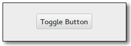

Gtk.ToggleButton
Example
| Subclasses: | Gtk.CheckButton, Gtk.MenuButton |
|---|
Methods
| Inherited: | Gtk.Button (29), Gtk.Bin (1), Gtk.Container (27), Gtk.Widget (256), GObject.Object (33), Gtk.Buildable (10), Gtk.Actionable (5), Gtk.Activatable (6) |
|---|
| static | new() |
| static | new_with_label(label) |
| static | new_with_mnemonic(label) |
| get_active() | |
| get_inconsistent() | |
| get_mode() | |
| set_active(is_active) | |
| set_inconsistent(setting) | |
| set_mode(draw_indicator) | |
| toggled() |
Virtual Methods
| Inherited: | Gtk.Button (6), Gtk.Container (10), Gtk.Widget (82), GObject.Object (7), Gtk.Buildable (10), Gtk.Actionable (4), Gtk.Activatable (2) |
|---|
| do_toggled() |
Properties
| Inherited: | Gtk.Button (10), Gtk.Container (3), Gtk.Widget (38), Gtk.Actionable (2), Gtk.Activatable (2) |
|---|
| Name | Type | Flags | Short Description |
|---|---|---|---|
| active | bool | r/w | If the toggle button should be pressed in |
| draw-indicator | bool | r/w | If the toggle part of the button is displayed |
| inconsistent | bool | r/w | If the toggle button is in an “in between” state |
Style Properties
| Inherited: | Gtk.Button (7), Gtk.Widget (17) |
|---|
Signals
| Inherited: | Gtk.Button (6), Gtk.Container (4), Gtk.Widget (69), GObject.Object (1) |
|---|
| Name | Short Description |
|---|---|
| toggled | Should be connected if you wish to perform an action whenever the Gtk.ToggleButton ‘s state is changed. |
Fields
| Inherited: | Gtk.Button (1), Gtk.Bin (1), Gtk.Container (1), Gtk.Widget (1), GObject.InitiallyUnowned (3), GObject.Object (3) |
|---|
| Name | Type | Access | Description |
|---|---|---|---|
| button | Gtk.Button | r |
Class Details
- class Gtk.ToggleButton(label=None, stock=None, use_stock=False, use_underline=False, **kwds)
Bases: Gtk.Button
A Gtk.ToggleButton is a Gtk.Button which will remain “pressed-in” when clicked. Clicking again will cause the toggle button to return to its normal state.
A toggle button is created by calling either Gtk.ToggleButton.new () or Gtk.ToggleButton.new_with_label (). If using the former, it is advisable to pack a widget, (such as a Gtk.Label and/or a Gtk.Image ), into the toggle button’s container. (See Gtk.Button for more information).
The state of a Gtk.ToggleButton can be set specifically using Gtk.ToggleButton.set_active (), and retrieved using Gtk.ToggleButton.get_active ().
To simply switch the state of a toggle button, use Gtk.ToggleButton.toggled ().
## Creating two Gtk.ToggleButton widgets.
<!-- language="C" --> void make_toggles (void) { GtkWidget *dialog, *toggle1, *toggle2; GtkWidget *content_area; const char *text; dialog = gtk_dialog_new (text); content_area = gtk_dialog_get_content_area (); text = "Hi, i’m a toggle button."; toggle1 = gtk_toggle_button_new_with_label (text); // Makes this toggle button invisible gtk_toggle_button_set_mode (GTK_TOGGLE_BUTTON (toggle1), TRUE); g_signal_connect (toggle1, "toggled", G_CALLBACK (output_state), NULL); gtk_box_pack_start (GTK_BOX (content_area), toggle1, FALSE, FALSE, 2); text = "Hi, i’m a toggle button."; toggle2 = gtk_toggle_button_new_with_label (text); gtk_toggle_button_set_mode (GTK_TOGGLE_BUTTON (toggle2), FALSE); g_signal_connect (toggle2, "toggled", G_CALLBACK (output_state), NULL); gtk_box_pack_start (GTK_BOX (content_area), toggle2, FALSE, FALSE, 2); gtk_widget_show_all (dialog); }
- static new()
Returns: a new toggle button. Return type: Gtk.Widget Creates a new toggle button. A widget should be packed into the button, as in Gtk.Button.new ().
- static new_with_label(label)
Parameters: label (str) – a string containing the message to be placed in the toggle button. Returns: a new toggle button. Return type: Gtk.Widget Creates a new toggle button with a text label.
- static new_with_mnemonic(label)
Parameters: label (str) – the text of the button, with an underscore in front of the mnemonic character Returns: a new Gtk.ToggleButton Return type: Gtk.Widget Creates a new Gtk.ToggleButton containing a label. The label will be created using Gtk.Label.new_with_mnemonic (), so underscores in label indicate the mnemonic for the button.
- get_active()
Returns: a bool value. Return type: bool Queries a Gtk.ToggleButton and returns its current state. Returns True if the toggle button is pressed in and False if it is raised.
- get_inconsistent()
Returns: True if the button is displayed as inconsistent, False otherwise Return type: bool Gets the value set by Gtk.ToggleButton.set_inconsistent ().
- get_mode()
Returns: True if the togglebutton is drawn as a separate indicator and label. Return type: bool Retrieves whether the button is displayed as a separate indicator and label. See Gtk.ToggleButton.set_mode ().
- set_active(is_active)
Parameters: is_active (bool) – True or False. Sets the status of the toggle button. Set to True if you want the Gtk.ToggleButton to be “pressed in”, and False to raise it. This action causes the Gtk.ToggleButton ::toggled signal and the Gtk.Button ::clicked signal to be emitted.
- set_inconsistent(setting)
Parameters: setting (bool) – True if state is inconsistent If the user has selected a range of elements (such as some text or spreadsheet cells) that are affected by a toggle button, and the current values in that range are inconsistent, you may want to display the toggle in an “in between” state. This function turns on “in between” display. Normally you would turn off the inconsistent state again if the user toggles the toggle button. This has to be done manually, Gtk.ToggleButton.set_inconsistent () only affects visual appearance, it doesn’t affect the semantics of the button.
- set_mode(draw_indicator)
Parameters: draw_indicator (bool) – if True, draw the button as a separate indicator and label; if False, draw the button like a normal button Sets whether the button is displayed as a separate indicator and label. You can call this function on a checkbutton or a radiobutton with draw_indicator = False to make the button look like a normal button
This function only affects instances of classes like Gtk.CheckButton and Gtk.RadioButton that derive from Gtk.ToggleButton, not instances of Gtk.ToggleButton itself.
- toggled()
Emits the Gtk.ToggleButton ::toggled signal on the Gtk.ToggleButton. There is no good reason for an application ever to call this function.
- do_toggled()
Type: virtual Emits the Gtk.ToggleButton ::toggled signal on the Gtk.ToggleButton. There is no good reason for an application ever to call this function.
Signal Details
- Gtk.ToggleButton.signals.toggled(toggle_button)
Signal Name: toggled Flags: RUN_FIRST Parameters: toggle_button (Gtk.ToggleButton) – The object which received the signal Should be connected if you wish to perform an action whenever the Gtk.ToggleButton ‘s state is changed.